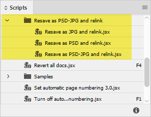
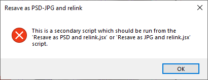
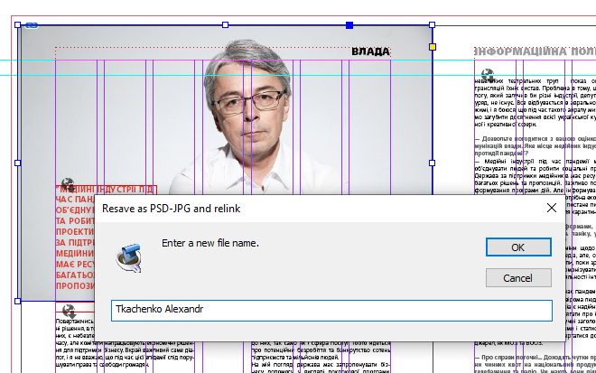

Resave as PSD or JPG and relink
Script for InDesign. Written by Kasyan.
The idea to write this script came to me when switched from our network in the office to DropBox. Then we used free accounts: one for each user and for most of us, the main problem was lack of space. I was asked to save images as JPEGs but preferred to work with PSDs or TIFs because I like to use layers so I wrote this script to resave images back and forth. Now we use a paid account so with 2 TB available, space isn’t a problem anymore. However, I still use the script, mostly the save as PSD feature because our designers usually place JPEGs and sometimes PNGs.
To use the script, select an image and run one of the following:
- Resave as PSD and relink.jsx
- Resave as JPG and relink.jsx

Don’t run Resave as PSD-JPG and relink.jsx – it’s triggered by the two above mentioned scripts. If you do, a warning will appear.

Then a pop-up appears with the current file name. You can change it in this step. I usually change the name generated by camera to something intelligible: for example, the person’s second name followed by the first name.

Click here to download the script.